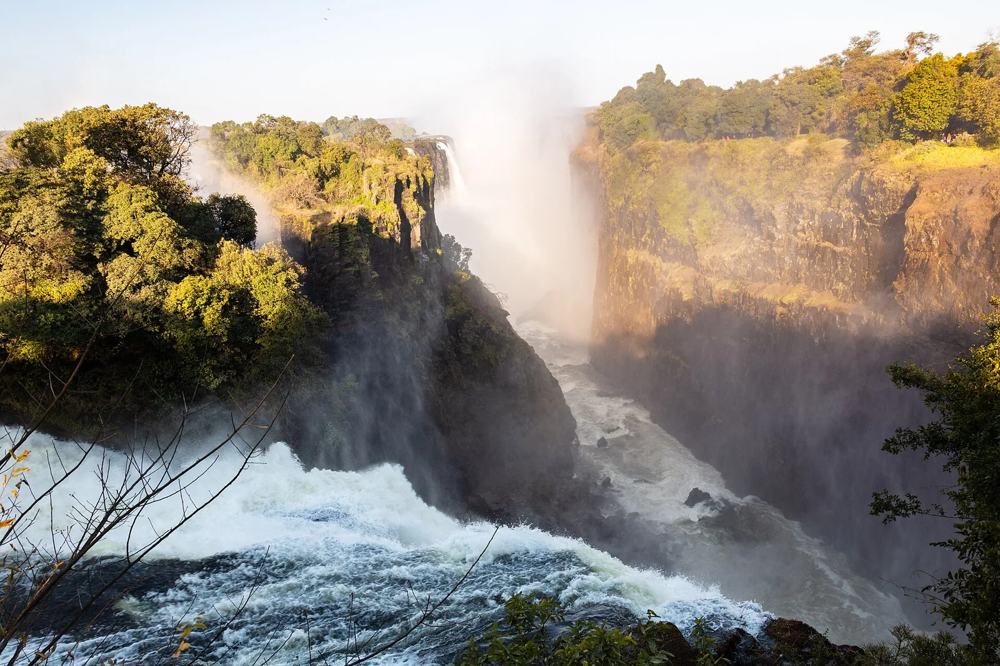

S8 · Sur
S8 · Süden
S8 · South
Cataratas Victoria
Crucé el océano. En las cataratas Victoria vi una cortina de agua de casi dos kilómetros: los que viven ahí la llaman Mosi Tunya, el humo que truena.
Ich überquerte den Ozean. An den Victoriafällen sah ich einen Wasservorhang von fast zwei Kilometern: die dort leben, nennen ihn Mosi-oa-Tunya, der donnernde Rauch.
I crossed the ocean. At Victoria Falls I saw a curtain of water almost two kilometres wide: those who live there call it Mosi-oa-Tunya, the smoke that thunders.
Información
En Mosi-oa-Tunya —«el humo que truena»— el río Zambeze, que ahí tiene más de dos kilómetros de ancho, se desploma por una sucesión de gargantas de basalto. La neblina que levanta se ve desde más de 20 kilómetros de distancia.
Es la mayor lámina de agua en caída del mundo. El sitio de Patrimonio Mundial es compartido entre dos países y cubre 6.860 hectáreas: 3.779 del Parque Nacional Mosi-oa-Tunya, en Zambia, y 2.340 del Parque Nacional Victoria Falls más 741 de una franja ribereña del Parque Nacional Zambeze, en Zimbabue.
Information
En Mosi-oa-Tunya —«el humo que truena»— el río Zambeze, que ahí tiene más de dos kilómetros de ancho, se desploma por una sucesión de gargantas de basalto. La neblina que levanta se ve desde más de 20 kilómetros de distancia.
Es la mayor lámina de agua en caída del mundo. El sitio de Patrimonio Mundial es compartido entre dos países y cubre 6.860 hectáreas: 3.779 del Parque Nacional Mosi-oa-Tunya, en Zambia, y 2.340 del Parque Nacional Victoria Falls más 741 de una franja ribereña del Parque Nacional Zambeze, en Zimbabue.
Information
En Mosi-oa-Tunya —«el humo que truena»— el río Zambeze, que ahí tiene más de dos kilómetros de ancho, se desploma por una sucesión de gargantas de basalto. La neblina que levanta se ve desde más de 20 kilómetros de distancia.
Es la mayor lámina de agua en caída del mundo. El sitio de Patrimonio Mundial es compartido entre dos países y cubre 6.860 hectáreas: 3.779 del Parque Nacional Mosi-oa-Tunya, en Zambia, y 2.340 del Parque Nacional Victoria Falls más 741 de una franja ribereña del Parque Nacional Zambeze, en Zimbabue.
La UICN evalúa Mosi-oa-Tunya como «bueno, con algunas preocupaciones», pero señala amenazas serias: cambio climático, turismo insostenible y desarrollo urbano.
El valor que define al sitio —ser la mayor cortina de agua en caída del mundo— está bajo presión por la reducción del caudal, agravada por las sequías periódicas y por la extracción de agua para generación hidroeléctrica. La sequía de 2019-2020, una de las peores en un siglo, redujo drásticamente el agua que caía por las cataratas.
La UICN evalúa Mosi-oa-Tunya como «bueno, con algunas preocupaciones», pero señala amenazas serias: cambio climático, turismo insostenible y desarrollo urbano.
El valor que define al sitio —ser la mayor cortina de agua en caída del mundo— está bajo presión por la reducción del caudal, agravada por las sequías periódicas y por la extracción de agua para generación hidroeléctrica. La sequía de 2019-2020, una de las peores en un siglo, redujo drásticamente el agua que caía por las cataratas.
La UICN evalúa Mosi-oa-Tunya como «bueno, con algunas preocupaciones», pero señala amenazas serias: cambio climático, turismo insostenible y desarrollo urbano.
El valor que define al sitio —ser la mayor cortina de agua en caída del mundo— está bajo presión por la reducción del caudal, agravada por las sequías periódicas y por la extracción de agua para generación hidroeléctrica. La sequía de 2019-2020, una de las peores en un siglo, redujo drásticamente el agua que caía por las cataratas.
Fuentes
Quellen
Sources
- UICN, Perspectiva del Patrimonio Mundial (evaluación 2025), Mosi-oa-Tunya / Victoria Falls — https://worldheritageoutlook.iucn.org/explore-sites/mosi-oa-tunya-victoria-falls
Galería
Galerie
Gallery


Fuentes
Quellen
Sources
- UNESCO, Centro del Patrimonio Mundial, Mosi-oa-Tunya / Victoria Falls — https://whc.unesco.org/en/list/509/ consultado 2026-10-05abgerufen 2026-10-05accessed 2026-10-05